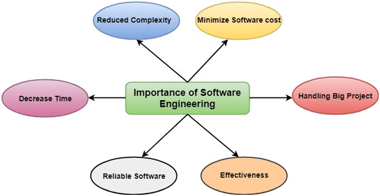
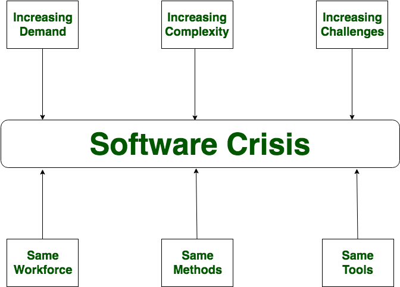

Software Engineering
First Unit
Introduction to Software Engineering
Software is a program or set of programs containing instructions that provide desired functionality.
Engineering is the process of designing and building something that serves a particular purpose and finds a cost-effective solution to problems, it is the application of scientific and practical knowledge to invent, design, build, maintain, and improve frameworks, processes, etc.
Software engineering is the process of designing, developing, testing, and maintaining software. It is a systematic and disciplined approach to software development that aims to create high-quality, reliable, and maintainable software. Software engineering includes a variety of techniques, tools, and methodologies, including requirements analysis, design, testing, and maintenance.
The IEEE has developed the following definition for software engineering:
(1)The application of a systematic, disciplined, quantifiable approach to the development, operation and maintainence of software; that is, the applicaiton of engineering to software. (2) The study of approaches as in (1).
Software Engineering is required due to the following reasons:
>> To manage Large software
>> For more Scalability
>> Cost Management
>> To manage the dynamic nature of software
>> For better quality Management
Importance of Software Engineering:

The Process and The Product
Aprocess is a collection of activities, actions and tasks that arre performed when a work product is to be created
A software process is the set of activities and associated outcome that produce a software product. Software engineers mostly carry out these activities. These are four key process activities, which are common to all software processes. These activities are:
- Software specifications: The functionality of the software and constraints on its operation must be defined.
- Software development: The software to meet the requirement must be produced.
- Software validation: The software must be validated to ensure that it does what the customer wants.
- Software evolution: The software must evolve to meet changing client needs.
In the classic book,How to Solve It, George Polya outlined the essence of problem solving, and consequently, the essence of software engineering practice:
- Understand the problem(communication and analysis)
- Plan a solution(modelling and software design)
- Carry out the plan(code generation)
- Examine the result(testing and quality assurance)
Software process or software development process is also called SDLC.
Software Development Life Cycle (SDLC) is a process used by the software industry to design, develop and test high quality software.
It is not rigid but it is adaptable approach which means details of the process will be different for different type of software.
Software Characteristics
- Software should achieve a good quality in design and meet all the specifications of the customer.
- Software does not wear out i.e. it does not lose the material.
- Software should be inherently complex.
- Software must be efficient i.e. the ability of the software to use system resources in an effective and efficient manner.
- Software must be integral i.e. it must prevent from unauthorized access to the software or data.
Software Characteristics are classified into six major components:

1. Functionality:It refers to the degree of performance of the software against its intended purpose.
Functionality refers to the set of features and capabilities that a software program or system provides to its users. It is one of the most important characteristics of software, as it determines the usefulness of the software for the intended purpose.
The more functionality a software has, the more powerful and versatile it is, but also the more complex it can be. It is important to balance the need for functionality with the need for ease of use, maintainability, and scalability.
Required functions are: Suitability, Accuracy, Interoperability, Compliance, Security
2. Reliability:A set of attributes that bears on the capability of software to maintain its level of performance under the given condition for a stated period of time.
Examples of factors that can affect the reliability of software include:
- Bugs and errors in the code
- Lack of testing and validation
- Poorly designed algorithms and data structures
- Inadequate error handling and recovery
- Incompatibilities with other software or hardware
Required functions are: Recoverability, fault tolerance, maturity
3. Efficiency:It refers to the ability of the software to use system resources in the most effective and efficient manner. The software should make effective use of storage space and executive command as per desired timing requirements.
Required functions are: Minimal Time and Minimal resources
4. Usability:It refers to the extent to which the software can be used with ease. the amount of effort or time required to learn how to use the software.
Required functions are: understandability, learnability, operability
5. Maintainability:It refers to the ease with which the modifications can be made in a software system to extend its functionality, improve its performance, or correct errors.
Required functions are: testability, changability, operability, stability
6. Portability: A set of attributes that bears on the ability of software to be transferred from one environment to another, without or minimum changes. Required functions are: adaptability, installability, replacability
Legacy Software
Legacy software refers to software that is outdated, no longer supported, and difficult to maintain or update due to its age, complexity, or dependence on outdated technology. Legacy software can refer to any type of software, including operating systems, applications, and databases.
Legacy software can pose a number of challenges for organizations that rely on it. Here are a few examples:
- Compatibility issues: Legacy software may not be compatible with newer hardware or operating systems, making it difficult to run on modern systems.
- Security risks: Legacy software may contain security vulnerabilities that are no longer being addressed by the vendor, leaving the system open to attack.
- Maintenance costs: Legacy software may be expensive and time-consuming to maintain and update, as it may require specialized knowledge or resources that are no longer readily available.
- Business risk: Legacy software may be critical to a company's operations, and any disruption or failure of the system could have significant business impacts.
Because of these challenges, many organizations are looking to modernize or replace their legacy software systems. This can involve migrating to newer technology platforms or developing new software from scratch, but it can be a complex and costly process.
Software Crisis
The term “software crisis” is used to refer to the inability to hire enough qualified programmers.
History:
1. Difficulties were faced with the advent of supercomputers and the development of large software systems in 1960s-1970s faced difficulties. The term “software crisis” dates from that time.
2. Hardware oriented world lead to people focusing more on hardware development than thinking about software.
3. Existing methods were insufficient: The problems arised with the increasing complexity of computers and the problems, while the programmers were equipped with the same methods they used to solve mild problems with.

Factors contributing to Software Crisis:
- Poor project management
- Lack of adequate training in software engineering
- Less skilled project members
- Low productivity improvement
Solution of Software Crisis: There is no single solution. One possible solution isSoftware Engineering(as it is systematic, disciplined and quantifiable approach)
Software Crisis prevention:
- Taking care of budget
- Ensuring quality of software is high
- Manage time properly
- Hire experienced and skilled peopke for working over a software project
Software Myths
Software myths are the erroneous beliefs about software and the process that is used to build it. Myths create major problems for management and practitioners alike.
The types of software myths are as follows:

Management Myths: Managers with software responsibility are often under pressure to maintain budgets, keep schedules and improve quality. Some of the managemt myths are:
- Myth: We have all the standards and procedures available for software development
Fact: Software experts do not know all the requirements for the software development. And all existing processes are incomplete as new software development is based on new and different problem
- Myth: The addition of the latest hardware programs will improve the software development
Fact: The role of the latest hardware is not very high on standard software development; instead (CASE) Engineering tools help the computer, they are more important than hardware to produce quality and productivity. Hence, the hardware resources are misused
- Myth: With the addition of more people and program planners to Software development can help meet project deadlines (If lagging behind)
Fact: If software is late, adding more people will merely make the problem worse. This is because the people already working on the project now need to spend time educating the newcomers, and are thus taken away from their work. The newcomers are also far less productive than the existing software engineers, and so the work put into training them to work on the software does not immediately meet with an appropriate reduction in work.
Customer Myths: The customer can be the direct users of the software, the technical team, marketing / sales department, or other company. Customer has myths leading to false expectations (customer) & that’s why you create dissatisfaction with the developer. Some of the customer myths are:
- Myth: A general statement of intent is enough to start writing plans (software development) and details of objectives can be done over time
Fact: Official and detailed description of the database function, ethical performance, communication, structural issues and the verification process are important. Unambiguous requirements (usually derived iteratively) are developed only through effective and continuous communication between customer and developer
- Myth: Software requirements continually change, but change can be easily accommodated because software is flexible
Fact: It is true that software requirements change, but the impact of change varies with the time at which it is introduced. When requirements changes are requested early (before design or code has been started), the cost impact is relatively small. However, as time passes, the cost impact grows rapidly—resources have been committed, a design framework has been established, and change can cause upheaval that requires additional resources and major design modification.
Practitioner’s Myths: Some practitioner’s myths are:
- Myth: They believe that their work has been completed with the writing of the plan.
Fact: It is true that every 60-80% effort goes into the maintenance phase (as of the latter software release). Efforts are required, where the product is available first delivered to customers
- Myht: There is no other way to achieve system quality, until it is “running”.
Fact: method. These updates are quality filters and more accessible than test
- Myth: Engineering software will enable us to build powerful and unnecessary document & always delay us.
Fact:Software engineering is not about creating documents. It is about creating a quality product. Better quality leads to reduced rework. And reduced rework results in faster delivery times.
Software Engineering: A layered Technonoly
- Software engineering is a fully layered technology.
- To develop a software, we need to go from one layer to another.
- All these layers are related to each other and each layer demands the fulfillment of the previous layer

The layered Technology consists of:
- Quality focus: The characteristics of good quality software are:
- Correctness of the functions required to be performed by the software.
- Maintainability of the software
- Integrity i.e. providing security so that the unauthorized user cannot access information or data.
- Usability i.e. the efforts required to use or operate the software.
- Process:
- It is the base layer or foundation layer for the software engineering.
- The software process is the key to keep all levels together.
- It defines a framework that includes different activities and tasks.
- In short, it covers all activities, actions and tasks required to be carried out for software development.
- Methods:
- The method provides the answers of all 'how-to' that are asked during the process.
- It provides the technical way to implement the software.
- It includes collection of tasks starting from communication, requirement analysis, analysis and design modelling, program construction, testing and support
- Tools:
- The software engineering tool is an automated support for the software development.
- The tools are integrated i.e the information created by one tool can be used by the other tool.
- For example: The Microsoft publisher can be used as a web designing tool.
Process Framework
Software Process Framework is an abstraction of the software development process. It details the steps and chronological order of a process. Since it serves as a foundation for them, it is utilized in most applications. Task sets, umbrella activities, and process framework activities all define the characteristics of the software development process.
Software process includes:
- Tasks – focus on a small, specific objective.
- Action – set of tasks that produce a major work product.
- Activities – group of related tasks and actions for a major objective.

Process Framework Activities:
The process framework is required for representing common process activities. Five framework activities are described in a process framework for software engineering. Communication, planning, modeling, construction, and deployment are all examples of framework activities. Each engineering action defined by a framework activity comprises a list of needed work outputs, project milestones, and software quality assurance (SQA) points
- Communication: By communication, customer requirement gathering is done. Communication with consumers and stakeholders to determine the system’s objectives and the software’s requirements.Communicate with the customer. Aim is to gain clarity on the software features and functions required.
- Planning: Establish engineering work plan, describes technical risk, lists resources requirements, work produced and defines work schedule. Creating a map /plan to follow. Aim of this step is to lay out the roadmap to make the journey easier. It defines the risks tasks, resources required, products to be produced and work schedule
- Modeling: Architectural models and design to better understand the problem and for work towards the best solution. The software model is prepared by:
- Analysis of requirements
- Design
Modeling is creating a sketch to understand the bigger picture, how the constituent parts fit together, etc. If required may refine the model to greater detail in order to understand the problems better and creating the design to address those problems.
- Construction:Creating code, testing the system, fixing bugs, and confirming that all criteria are met. The created design is built. The software design is mapped into a code by:
- Deployment: In this activity, a complete or non-complete product or software is represented to the customers to evaluate and give feedback. On the basis of their feedback, we modify the product for the supply of better products.

Umbrella activities:Umbrella Activities are that take place during a software development process for improved project management and tracking
- Software project tracking and control: This is an activity in which the team can assess progress and take corrective action to maintain the schedule. Take action to keep the project on time by comparing the project’s progress against the plan.
- Risk management: The risks that may affect project outcomes or quality can be analyzed. Analyze potential risks that may have an impact on the software product’s quality and outcome
- Software quality assurance: These are activities required to maintain software quality. Perform actions to ensure the product’s quality
- Formal technical reviews: It is required to assess engineering work products to uncover and remove errors before they propagate to the next activity. At each level of the process, errors are evaluated and fixed.
- Software configuration management: Managing of configuration process when any change in the software occurs.
- Work product preparation and production: The activities to create models, documents, logs, forms, and lists are carried out.
- Reusability management: It defines criteria for work product reuse. Reusable work items should be backed up, and reusable software components should be achieved
- Measurement: In this activity, the process can be defined and collected. Also, project and product measures are used to assist the software team in delivering the required software.
Software Engineeering paradigms:
SDLC: SDLC is a step by step procedure or systematic approach to develop software and it is followed within a
software organization. It consists of various phases which describe how to design, develop, enhance and maintain
particular software
A software development lifecycle (SDLC) model conceptually presents SDLC in an organized fashion to help organizations implement it. Different models arrange the SDLC phases in varying chronological order to optimize the development cycle

Diferent SDLC models are:
Sequential Model: It is also called a linear sequential model, classic life cycle or waterfall model. It suggests a systematic, sequential approach to Software Development that begins at a systematic level and progresses through communication, planning, modeling, construction, and deployment. The steps are as follows:

Some Circumstances where the use of the Waterfall model is most suited are:
- When the requirements are constant and not changed regularly.
- A project is short
- The situation is calm
- Where the tools and technology used is consistent and is not changing
- When resources are well prepared and are available to use.
Advantages of Sequential model:
- This model is simple to implement also the number of resources that are required for it is minimal.
- The requirements are simple and explicitly declared; they remain unchanged during the entire project development.
- The start and end points for each phase is fixed, which makes it easy to cover progress.
- The release date for the complete product, as well as its final cost, can be determined before development.
- It gives easy to control and clarity for the customer due to a strict reporting system
Disadvantages of Sequential model:
- The risk factor is higher, so this model is not suitable for more significant and complex projects.
- This model cannot accept the changes in requirements during development.
- The start and end points for each phase is fixed, which makes it easy to cover progress.
- It becomes tough to go back to the phase. For example, if the application has now shifted to the coding phase, and there is a change in requirement, It becomes tough to go back and change it.
Incremental model:Incremental Model is a process of software development where requirements divided into multiple standalone modules of the software development cycle. In this model, each module goes through the requirements, design, implementation and testing phases. Every subsequent release of the module adds function to the previous release. The process continues until the complete system achieved.

The various phases of incremental model are:
- Requirement analysis: In the first phase of the incremental model, the product analysis expertise identifies the requirements. And the system functional requirements are understood by the requirement analysis team. To develop the software under the incremental model, this phase performs a crucial role.
- Design & Development:In this phase of the Incremental model of SDLC, the design of the system functionality and the development method are finished with success. When software develops new practicality, the incremental model uses style and development phase.
- Testing:In the incremental model, the testing phase checks the performance of each existing function as well as additional functionality. In the testing phase, the various methods are used to test the behavior of each task.
- Implementation:Implementation phase enables the coding phase of the development system. It involves the final coding that design in the designing and development phase and tests the functionality in the testing phase. After completion of this phase, the number of the product working is enhanced and upgraded up to the final system product
When is Incremental Model used
- When the requirements are superior.
- A project has a lengthy development schedule.
- When Software team are not very well skilled or trained.
- When the customer demands a quick release of the product.
- You can develop prioritized requirements first
Advantage of Incremental Model
- Errors are easy to be recognized.
- Easier to test and debug.
- More flexible.
- Simple to manage risk because it handled during its iteration.
- The Client gets important functionality early.
Disadvantage of Incremental Model
- Need for good planning.
- Total Cost is high.
- Well defined module interfaces are needed
Evolutionary Model: Evolutionary model is also referred to as the successive versions model and sometimes as the incremental model. In Evolutionary model, the software requirement is first broken down into several modules (or functional units) that can be incrementally constructed and delivered
The evolutionary model is shown in Figure 6. Each successive version/model of the product is a fully functioning software capable of performing more work than the previous versions/model. The evolutionary model is normally useful for very large products, where it is easier to find modules for incremental implementation.

Often, evolutionary model is used when the customer prefers to receive the product in increments so that he can start using the different features as and when they are developed rather than waiting all the time for the full product to be developed and delivered
Advantages of Evolutionary Model
- Large project: Evolutionary model is normally useful for very large products.
- User gets a chance to experiment with a partially developed software much before the complete version of the system is released.
- Evolutionary model helps to accurately elicit user requirements during the delivery of different versions of the software.
- The core modules get tested thoroughly, thereby reducing the chances of errors in the core modules of the final products.
- Evolutionary model avoids the need to commit large resources in one go for development of the system.
Disadvantages of Evolutionary Model
Difficult to divide the problem into several versions that would be acceptable to the customer and which can be incrementally implemented and delivered
Specialized Process Model: Special process models take on many of the characteristics of one or more of the conventional models. However, specialized models tend to be applied when a narrowly defined software engineering approach is chosen.
here are 3 types of specialized process models:
- Component Based Development
- Formal Methods Model
- Aspect Oriented Software development
Component Based Development : Commercial off-the-shelf (COTS) software components, developed by vendors who offer them as products, provide targeted functionality with well-defined interfaces that enable the component to be integrated into the software that is to be built. The component-based development model incorporates many of the characteristics of the spiral model. It is evolutionary in nature, demanding an iterative approach to the creation of software. However, the component-based development model constructs applications from prepackaged software component. Modeling and construction activities begin with the identification of candidate components. These components can be designed as either conventional software modules or object-oriented classes or packages of classes. Regardless of the technology that is used to create the components, the component-based development model incorporates the following steps:
1. Available component-based products are researched and evaluated for the application domain in question.
2. Component integration issues are considered. 3. A software architecture is designed to accommodate the components./br> 4. Components are integrated into the architecture. 5. Comprehensive testing is conducted to ensure proper functionality
Formal Methods Model : The formal methods model encompasses a set of activities that leads to formal mathematical specification of computer software. Formal methods enable to specify, develop, and verify a computer-based system by applying a rigorous, mathematical notation. A variation on this approach, called cleanroom software engineering is currently applied by some software development organizations.
When formal methods are used during design, they serve as a basis for program verification and therefore enable you to discover and correct errors that might otherwise go undetected. The formal methods model offers the promise of defect-free software.There are some of the disadvantages too:
• The development of formal models is currently quite time consuming and expensive.
• Because few software developers have the necessary background to apply formal methods, extensive training is required.
• It is difficult to use the models as a communication mechanism for technically unsophisticated customers.
Aspect Oriented Software Development : Regardless of the software process that is chosen, the builders of complex software invariably implement a set of localized features, functions, and information content. These localized software characteristics are modeled as components and then constructed within the context of a system architecture. As modern computer-based systems become more sophisticated certain concerns span the entire architecture. Some concerns are high-level properties of a system, Other concerns affect functions, while others are systemic. When concerns cut across multiple system functions, features, and information, they are often referred to as crosscutting concerns. Aspectual requirements define those crosscutting concerns that have an impact across the software architecture. Aspect-oriented software development (AOSD), often referred to as aspect-oriented programming (AOP), is a relatively new software engineering paradigm that provides a process and methodological approach for defining, specifying, designing, and constructing aspects.